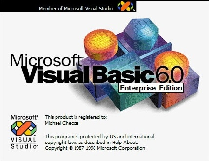

Visual Basic

쉽고 간편하게 Windows 프로그램을 만들 수 있게 마이크로소프트 사에서 출시한 BASIC 프로그래밍 툴.
비주얼 스튜디오에 종속되어 있으며, 인터페이스가 매우 쉽고 간편하여 짧은 시간 안에 윈도우즈 기반 프로그램을 만들 수 있다.
그리고 API, MFC처럼 코드로만 프로그래밍을 하는 것이 아니라, 도구 상자에 있는 여러 오브젝트들을 드래그 앤 드롭으로 프로젝트 내에 추가할 수 있다.
예를 들어서 API에서 커맨드 하나를 만드려면 긴 코드를 작성해야 하는데, 비주얼 베이직에서는 오브젝트를 끌어다 놓는것 하나만으로 커맨드 하나를 만들 수 있다.
이처럼 쉬운 제작 환경 덕분에 다른 것들보다 훨씬 빨리 프로그램을 만들 수 있다.